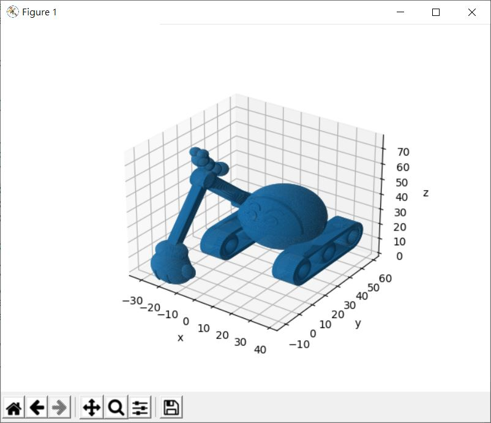
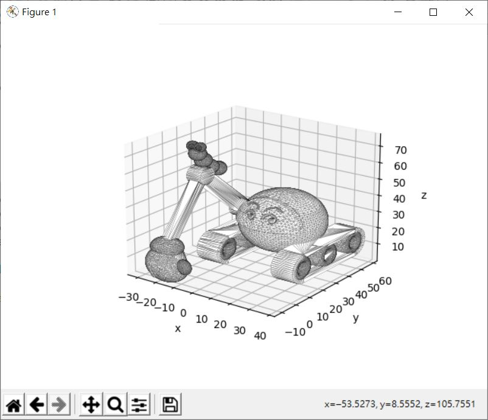

如果手邊有個 3D 模型檔案，能不能用 Matplotlib 檢視呢？可以！當然，3D 模型檔案有不同的格式，基本上必須先解決讀檔的問題。
以 OBJ 檔案為例，它可以使用純文字編輯器開啟，當中會包含頂點座標與三角面的頂點索引，例如 caterpillar.obj，就包含了以下的資料：
# Exported from 3D Builder
o Object.1
v 32.023987 34.396461 42.497063
v 32.023983 32.002457 43.037056
v 32.023987 34.166458 43.651062
v 20.774000 34.396450 42.497063
v 20.774000 34.166451 43.651062
v 20.774002 32.002453 43.037060
v 20.774002 32.202454 41.829056
v 21.527994 32.202454 41.829056
v -17.877909 -18.721634 40.853043
...略
f 2 1 3
f 1 4 3
f 5 3 4
f 5 4 6
f 7 6 4
f 4 14 7
f 15 7 14
f 23 15 14
f 14 24 23
f 23 24 26
f 20114 26 24
f 24 20113 20114
...略
可以透過 np.fromregex 讀取檔案：
import numpy as np
import matplotlib.pyplot as plt
obj = np.fromregex('caterpillar.obj',
r'([vf]) ([-\d.]+) ([-\d.]+) ([-\d.]+)',
dtype=np.str)
接著取得資料是 v 還是 f，根據檔案格式內容，只要找出有幾個 v，剩下的就是 f：
t = obj[:,0]
# v 的個數
vleng = obj[:,0][t == 'v'].size
v = obj[0:vleng,1:].astype(np.float)
f = obj[vleng:,1:].astype(np.int) - 1
必須注意的是，OBJ 的頂點索引是以 1 為底，上例的 f 要減去 1，成為以 0 為底。
這邊順便來解決座標單位等距的問題，不然 3D 模型檢視時會變形，這可以寫個 set_axis_cube：
# 接受 Axes3D 實例
def set_axis_cube(ax):
# 目前的軸最大最小值
xlim = ax.get_xlim()
ylim = ax.get_ylim()
zlim = ax.get_zlim()
# 計算繪製需要的範圍
r = 0.5 * max([
abs(xlim[1] - xlim[0]),
abs(ylim[1] - ylim[0]),
abs(zlim[1] - zlim[0])]
)
xmid = np.mean(xlim)
ymid = np.mean(ylim)
zmid = np.mean(zlim)
# 以資料中點，r 為範圍重新設定軸最大最小值
ax.set_xlim([xmid - r, xmid + r])
ax.set_ylim([ymid - r, ymid + r])
ax.set_zlim([zmid - r, zmid + r])
將這些合起來的話：
import numpy as np
import matplotlib.pyplot as plt
def set_axis_cube(ax):
xlim = ax.get_xlim3d()
ylim = ax.get_ylim3d()
zlim = ax.get_zlim3d()
r = 0.5 * max([
abs(xlim[1] - xlim[0]),
abs(ylim[1] - ylim[0]),
abs(zlim[1] - zlim[0])]
)
xmid = np.mean(xlim)
ymid = np.mean(ylim)
zmid = np.mean(zlim)
ax.set_xlim3d([xmid - r, xmid + r])
ax.set_ylim3d([ymid - r, ymid + r])
ax.set_zlim3d([zmid - r, zmid + r])
obj = np.fromregex('caterpillar.obj',
r'([vf]) ([-\d.]+) ([-\d.]+) ([-\d.]+)',
dtype=np.str)
t = obj[:,0]
vleng = obj[:,0][t == 'v'].size
v = obj[0:vleng,1:].astype(np.float)
f = obj[vleng:,1:].astype(np.int) - 1
vx = v[:,0]
vy = v[:,1]
vz = v[:,2]
ax = plt.axes(projection='3d')
ax.plot_trisurf(vx, vy, vz, triangles = f)
ax.set_xlabel('x')
ax.set_ylabel('y')
ax.set_zlabel('z')
set_axis_cube(ax)
plt.show()
就可以繪製以下的圖案：

你也可以使用現成的程式庫來讀取模型，例如 numpy-stl 可以讀取 STL 檔案，以 caterpillar.stl 為例：
import numpy as np
import matplotlib.pyplot as plt
from mpl_toolkits.mplot3d.art3d import Poly3DCollection
from stl.mesh import Mesh
# 修改一下 xlim、ylim 與 zlim 的取得方式
def set_axis_cube(ax, stl):
x = stl.vectors[:,0,0]
y = stl.vectors[:,0,1]
z = stl.vectors[:,0,2]
xlim = [x.min(), x.max()]
ylim = [y.min(), y.max()]
zlim = [z.min(), z.max()]
r = 0.5 * max([
abs(xlim[1] - xlim[0]),
abs(ylim[1] - ylim[0]),
abs(zlim[1] - zlim[0])]
)
xmid = np.mean(xlim)
ymid = np.mean(ylim)
zmid = np.mean(zlim)
ax.set_xlim([xmid - r, xmid + r])
ax.set_ylim([ymid - r, ymid + r])
ax.set_zlim([zmid - r, zmid + r])
# 讀取 STL
stl = Mesh.from_file('caterpillar.stl')
ax = plt.axes(projection='3d')
# stl.vectors 就是各個三角面的頂點組成之陣列
# 可直接搭配 Poly3DCollection
ax.add_collection3d(
Poly3DCollection(stl.vectors,
linewidth=0.1,
facecolor='white',
edgecolor='black'
)
)
ax.set_xlabel('x')
ax.set_ylabel('y')
ax.set_zlabel('z')
set_axis_cube(ax, stl)
plt.show()
這可以顯示以下的畫面：
